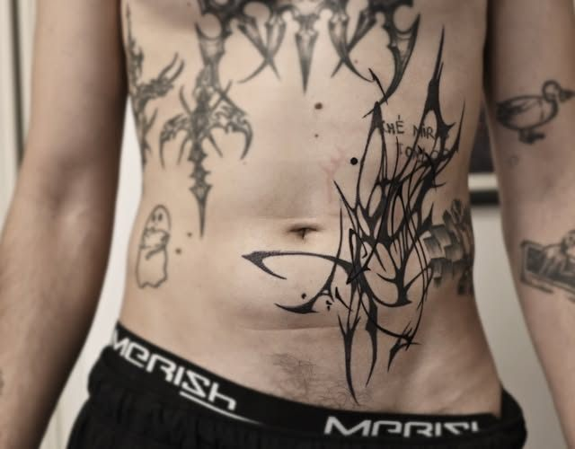
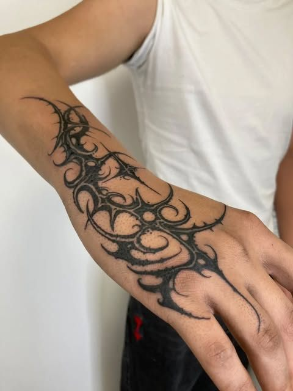
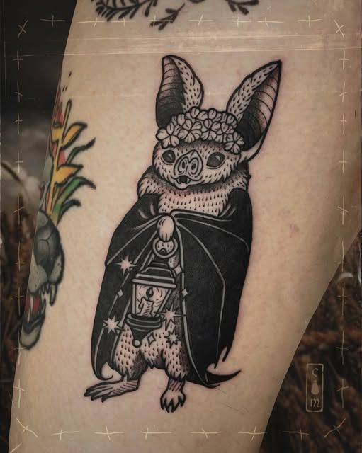
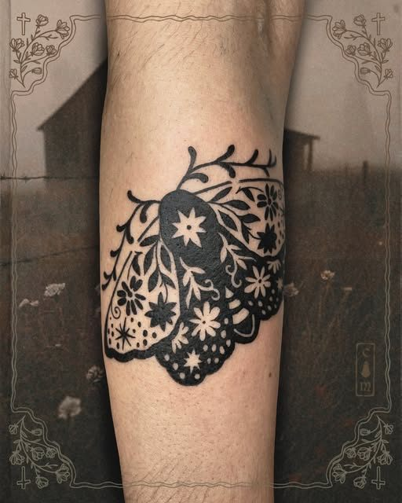
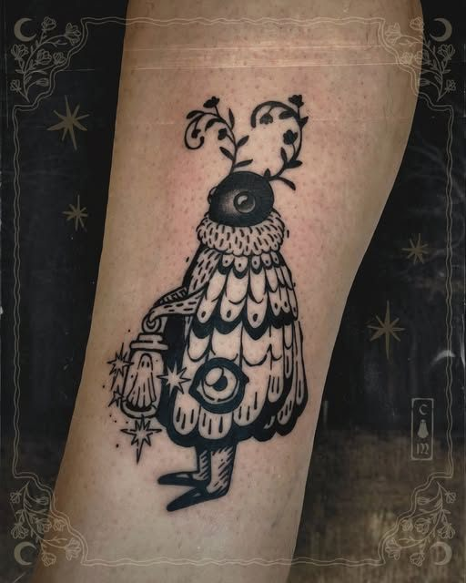
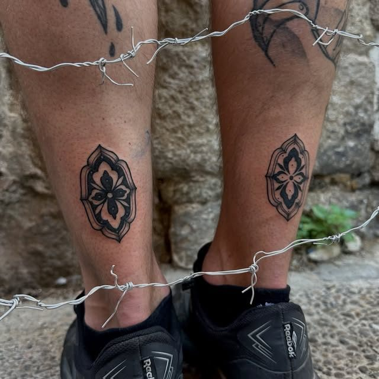
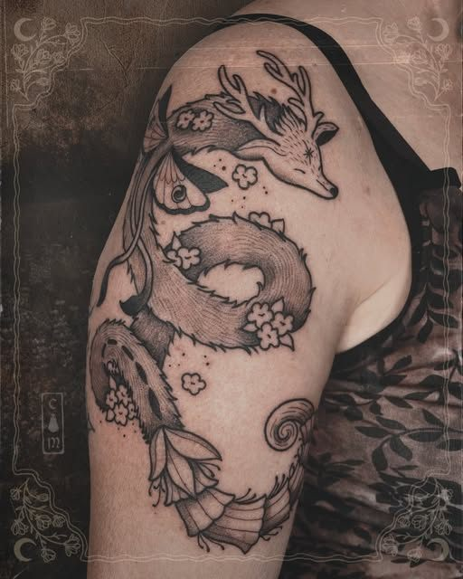
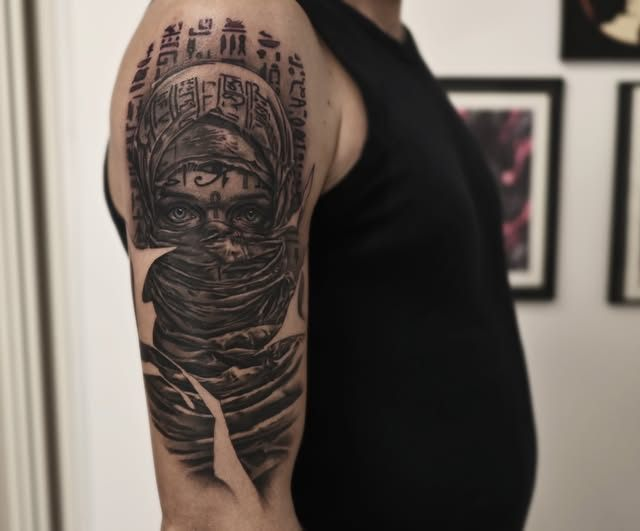

Tatuaje
Diseños propios y a medida. Cuéntanos tu idea y te decimos qué artista encaja mejor.
Blackwork, neotribal, ornamental e ilustración oscura. Cada artista tiene su estilo: elige el tuyo y te hacemos un diseño único.
Blackwork · neotribal · ornamental · ilustración · realismo








Diseños propios y a medida. Cuéntanos tu idea y te decimos qué artista encaja mejor.
Perforaciones y cambio de joyas, con material estéril.
Para aclarar un tatuaje antiguo antes de taparlo o para eliminarlo.
Días de diseños ya dibujados a precio cerrado. Te avisamos en Instagram.
Traza una línea con el dedo o el ratón: la convertimos en una pieza neotribal simétrica, con sus espinas. Guárdala y llévasela a tu tatuador como punto de partida.
Es un boceto para inspirarte: el diseño final lo dibuja el artista sobre tu cuerpo.
Dibuja aquí